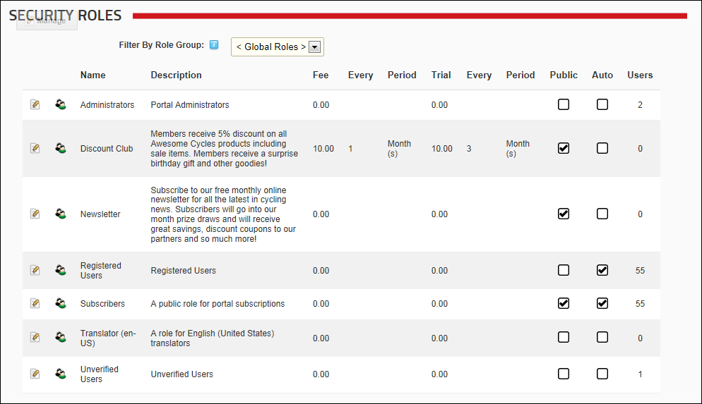

About Security Roles
Security Roles, located on the Admin >  Security Roles page, allows authorized users to create and manage security roles and security role groups and assign or remove users from those roles. The Security Roles module forms part of the Users & Roles module package and can be added to any site page.
Users must be granted Edit Module (DNN Platform) or Edit Content (Evoq Content and Evoq Content Enterprise) permissions to perform tasks.
Security Roles page, allows authorized users to create and manage security roles and security role groups and assign or remove users from those roles. The Security Roles module forms part of the Users & Roles module package and can be added to any site page.
Users must be granted Edit Module (DNN Platform) or Edit Content (Evoq Content and Evoq Content Enterprise) permissions to perform tasks.

The Security Roles page
The following details of each role are displayed on the Security Roles module by default:
- Role Name
- Role description
- Role fee and period
- Trial fee and period
- If the role is public
- If users are automatically assigned to the role
- The number of users belonging to the role
Security Roles can be configured in a number of ways to change the way users can access roles. The following options are available.
- Public Role: Roles set as public enable all registered users to be able to subscribe or unsubscribe to the role. Public Roles are managed by authenticated users under Membership Services on the View Profile (also called the My Profile) module.
- Private Role: When a role is not set as public, it is a private role. Only Administrators have access to manage user access to these roles, unless the role includes an RSVP Code.
- RSVP Code: When a role includes an RSVP code, users can subscribe to the role by entering the code into a text box under Manage Services on their profile. This provides a quick way to subscribe and also enables subscriptions to be limited to those with the code if the role is set as Private.
- RSVP Link: The RSVP link setting automatically adds a user to that role when they go to the RSVP link. This provides a very easy way of subscribing to a role.
- Auto Assignment: All registered users are automatically added to these roles upon registration. If the role is also set as Public, users can unsubscribe and unsubscribe to it. If the role is set as Private, only Administrators can manage user access.